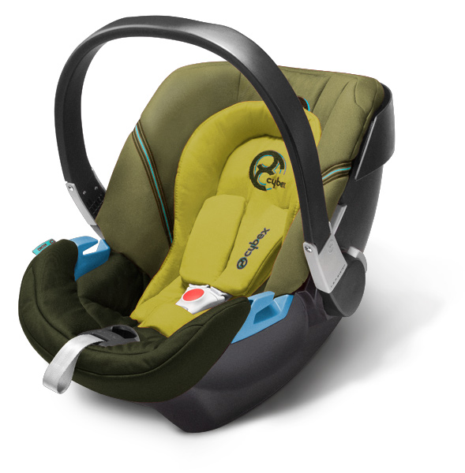
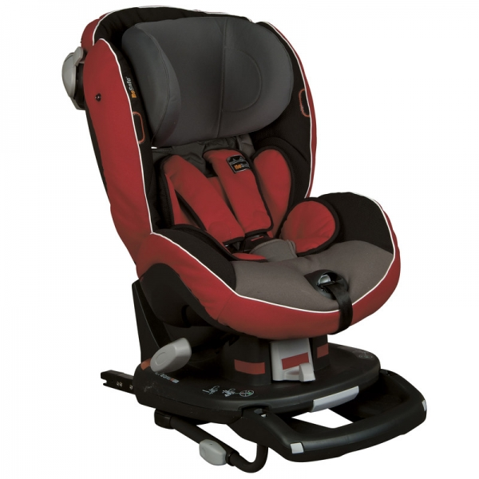
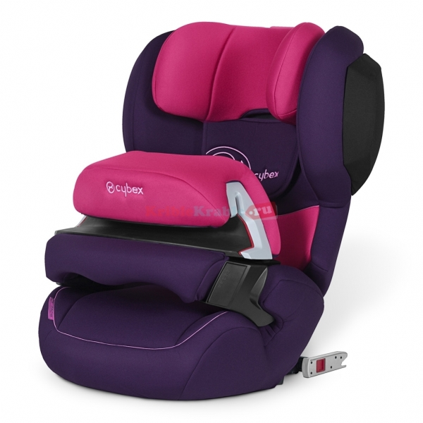
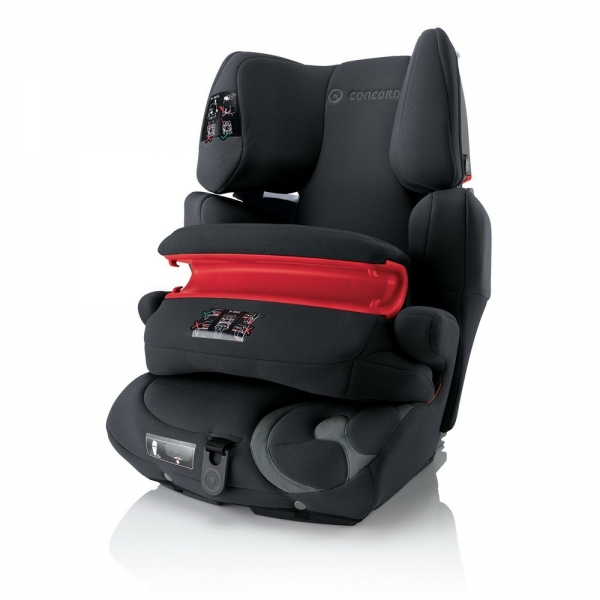
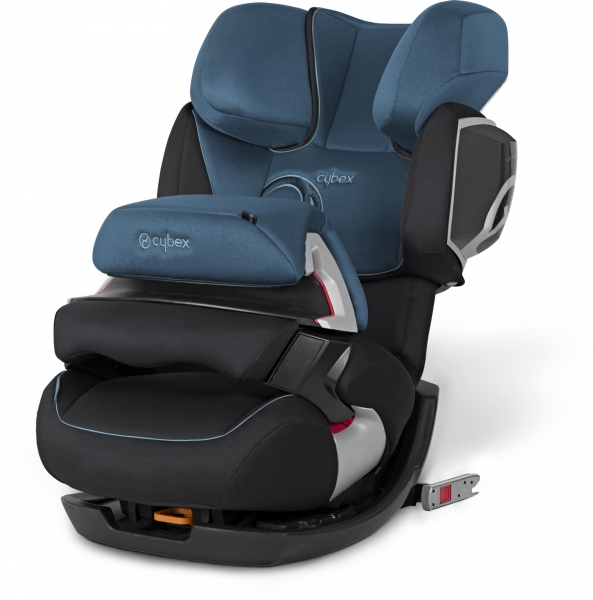
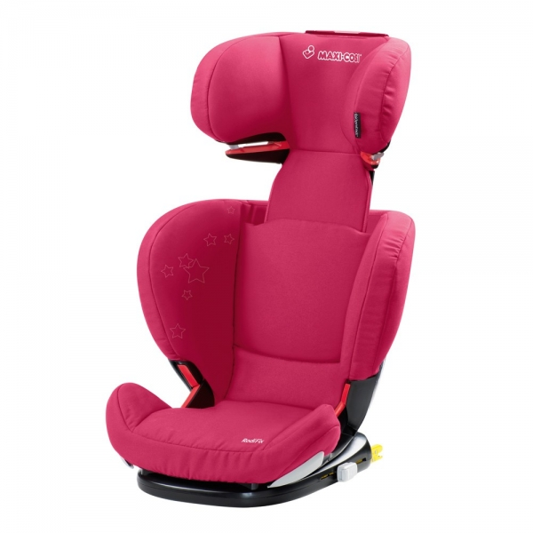

Краш тесты и рейтинг самых безопасных детских автокресел .
Ранее мы с Вами уже обсуждали, как выбрать и установить детское автокресло. Предлагаем продолжить этот разговор и обратиться к реальным испытаниям спецустройств, призванных сохранить жизнь и здоровье Вашего малыша во время поездки.
Все серьезные производители детских автмобильных кресел проводят многочисленные испытания конструкций перед выпуском кресел в продажу. При ударе на скорости до 50 км/ч ребенок должен смещаться вперед максимум на 55 см – это критерий безопасности, котором руководствуются во всем мире. К сожалению, в России не существует организации, которая бы массово проверяла все детские автосиденья, что поступают в продажу в нашей стране. Поэтому мы будем ссылать на испытания, которые ежегодно проводит Всеобщий немецкий автомобильный клуб (нем. Allgemeiner Deutscher Automobil-Club e.V. — сокр. ADAC) — общественная организация автомобилистов Германии, самая крупная в Европе.
По результатам последних тестов ADAC, среди моделей детских автомобильных удерживающих устройств лучшими в своей группе стали следующие модели.
Балл безопасности кресла – от 1.6 до 2.5. Кресла, получившие оценку в этой категории, надежно защитят малыша при аварии.
Группа 0/0+ (до 13 кг | примерно до 1,5 лет )
Cybex Aton 2 – получило общий балл 1.6, один из самых безопасных вариантов среди всех возрастных групп. Устанавливается только против хода движения (лицом назад). Крепится штатными ремнями автомобиля. В наличии специальный вкладыш для новорожденного, благодаря которому малыш находится в положении, максимально близком к горизонтальному. Имеет дополнительную защиту от опрокидывания и специальную конструкцию, поглощающую удары.

Группа 0+/1 (от 0 до 18 кг | примерно от 0 до 4 лет)
В 2012 г. в этой категории испытания проходила модель Peg Perego Viaggio Convertibile. Однако балл получила зашкаливающе низкий – 5.4. Поэтому лучше обратить внимание на модель 2011 г., которая успешно справилась с задачей защиты малыша - BeSafe IZI Comfort X3 Isofix. Оно устанавливаец по ходу движение, крепится трехточечными ремнями безопасности автомобиля.

Группа 1 (от 9 до 18 кг | примерно от 1 до 4 лет)
Cybex Juno-Fix удостоилось отличного балла безопасности – 1.6. Ребенок фиксируется не ремнями, а специальным столиком безопасности, который позволяет существенно снизить риск травм при фронтальном ударе, благодаря равномерному распределению ударной нагрузки.

Группа 1 / 2 / 3 (от 9 до 36 кг | примерно от 1 до 12 лет)
В этой группе с баллом 2.2 лидировали сразу две модели кресел.
Concord Tracsformer Pro – оборудовано съемным столиком безопасности, который при желании можно отстегнуть и фиксировать ребенка ремнями автомобиля. Имеет возможность увеличения изменения размера сиденья по мере роста малыша.

Cybex Pallas 2 – также оснащено столиком и, кроме того, мощной боковой защитой, что уменьшает риск получения травмы при боковом столкновении.

Группа 2 / 3 (от 15 до 36 кг | примерно от 4 до 12 лет)
Maxi Cosi RodiFix – получила очень хороший балл безопасности, равный 1.8. Конструкция включает подголовник, защищающий голову и шейные позвонки ребенка при аварии. Внимание! Данное кресло устанавливается в автомобиль при помощи системы IsoFix*.

Все кресла, прошедшие тесты, соответствуют европейскому уровню безопасности и надежно защитят Вашего ребенка в любой ситуации на дороге. Мы надеемся, что информация поможет Вам правильно и быстро определиться с выбором удерживающего устройства.
* Isofix (Изофикс) - система крепления детского автомобильного кресла. Существует с 1990 г., входит в массовое использование. Это система жесткого крепления детского кресла к кузову автомобиля, как правило, на заднем сиденье. В сиденье автомобиля сделаны специальные отверстия для кронштейнов детского автокресла. Такой способ крепления позволяет легко монтировать и демонтировать детское сиденье в машине. Многие современные иномарки в штатной комплектации уже оборудованы Isofix. Автомобили ВАЗ ГАЗ не оборудованы Isofix.
Однако необходимо учитывать, что для старшей группы наравне с Изофикс обязательно нужно использовать и ремни безопасности автомобиля – так как при весе ребенка более 15 кг крепление IsoFix может не выдержать силы удара.